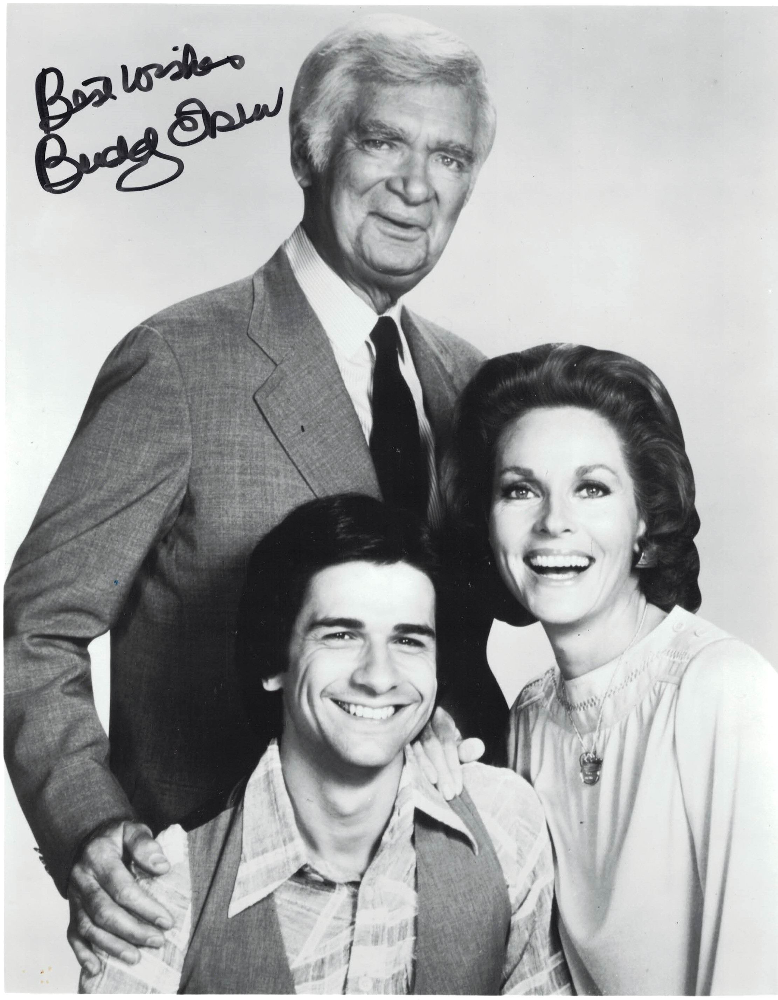

Product No. HEA-0036
$260
Shipping: $8.95
Description
Signed 8x10 B&W photo from Barnaby Jones. Not inscribed.
Full Description
(Deceased) Born April 2, 1908 — Died July 6, 2003. Buddy Ebsen was an American actor, dancer and entertainer best known for starring as the kindhearted Jed Clampett on the popular television comedy The Beverly Hillbillies, which aired from 1962 to 1971. Ebsen began his career as a dancer, performing on Broadway and in musical films during the 1930s. He was originally cast as the Tin Man in The Wizard of Oz but was forced to leave the production after suffering a serious reaction to the aluminum makeup used for the character. His film appearances included Broadway Melody of 1936, Captain January, Breakfast at Tiffany’s and Disney’s Davy Crockett productions. Following The Beverly Hillbillies, Ebsen enjoyed another long-running television success as the title character in the detective series Barnaby Jones, which aired from 1973 to 1980. Known for his gentle humor, distinctive voice and relaxed screen presence, Ebsen enjoyed an entertainment career lasting more than seven decades.
Condition
Excellent condition